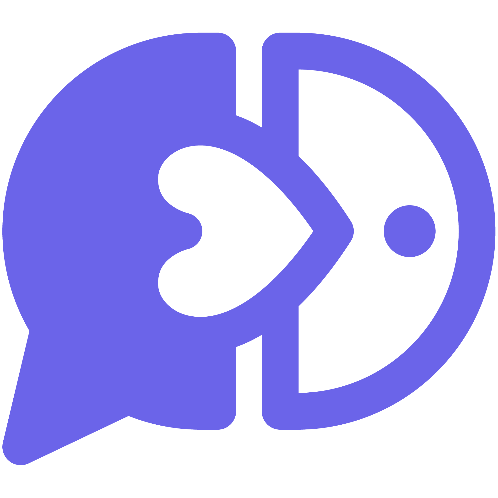

Campus Drop미션 맵 에디터
운영본부 제작 도구
현장 조사 미션을 설계하세요
제작 준비도75%
1
몇 문제가 필요한가요?
첫 데모는 3문제를 추천합니다. 너무 길면 현장 몰입이 끊깁니다.
3
2
어떤 방식으로 문제를 낼까요?
질문형은 빠르게 만들 수 있고, 이미지형은 현장감이 강합니다.
3
어떤 방식으로 풀게 할까요?
AR과 위치인식은 사진/좌표 샘플을 여러 개 모아야 안정적입니다.
4
정답은 무엇인가요?
현장 사진을 최소 5장 정도 모으는 것을 추천합니다.
저장 위치위치 미저장
아직 저장된 정답 사진이 없습니다. 현장 표식은 정면, 좌측, 우측, 가까운 거리, 먼 거리로 찍는 것을 추천합니다.